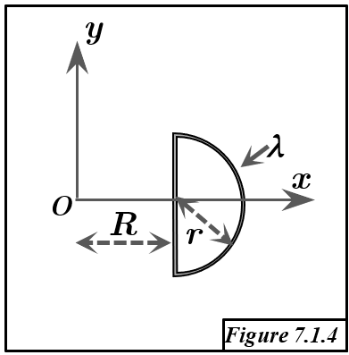

Solution Figure 7.1.4 : Corps linéique (Segment + Demi-cercle)

FIGURE 7.1.4 - Corps linéique composé d'un segment [ab] et d'un demi-cercle (adb)
Méthode requise : Théorème de Guldin (uniquement).
Concepts Clés :
- Premier Théorème de Guldin : L'aire $S_{/\Delta}$ de la surface engendrée par la rotation d'un arc de courbe plane $(L)$ de longueur $L$ autour d'un axe $(\Delta)$ coplanaire ne le coupant pas (ou le touchant seulement) est :
$$S_{/\Delta} = L \times (2\pi R_G)$$
où $R_G$ est la distance du centre d'inertie $G$ de l'arc à l'axe $(\Delta)$. On peut donc trouver cette distance par :
$$R_G = \frac{S_{/\Delta}}{2\pi L}$$
- Corps linéique : L'objet est constitué d'éléments (segment, arc) de densité linéique $\lambda$ constante.
- Centre d'inertie G : On cherche les coordonnées $(x_G, y_G, z_G)$. La coordonnée $x_G$ est la distance $R_{G, Oy}$ à l'axe Oy, et $y_G$ est la distance $R_{G, Ox}$ à l'axe Ox. Vu la géométrie (dans le plan z=0), $z_G=0$.
- Superposition : Le centre d'inertie $G$ du corps total est le barycentre des centres d'inertie de ses composantes ($G_{seg}$ pour le segment, $G_{semi}$ pour le demi-cercle), pondérés par leurs longueurs respectives ($L_{seg}$, $L_{semi}$).
Géométrie et Décomposition :
Le corps linéique est dans le plan z=0 et se compose de deux parties :
- Segment [ab] :
- Extrémités : a(R, -r, 0) et b(R, r, 0).
- Description : Segment vertical situé à l'abscisse $x=R$.
- Longueur : $L_{seg} = 2r$.
- Demi-cercle (adb) :
- Description : Arc de cercle dans le plan z=0, centré en c(R, 0, 0) de rayon r, reliant a(R, -r, 0) et b(R, r, 0) en passant par d(R+r, 0, 0). C'est la moitié droite du cercle d'équation $(x-R)^2 + y^2 = r^2$.
- Paramétrisation : $x(\theta) = R + r\cos\theta$, $y(\theta) = r\sin\theta$, pour $\theta \in [-\pi/2, \pi/2]$.
- Longueur : $L_{semi} = \frac{1}{2} \times (2\pi r) = \pi r$.
Longueur totale du corps : $L_{tot} = L_{seg} + L_{semi} = 2r + \pi r = r(2+\pi)$.
Calcul des Centres d'Inertie (par Guldin)
1. Centre d'Inertie $G_{semi} = (x_{G,semi}, y_{G,semi}, 0)$ du Demi-cercle (adb)
Le demi-cercle est symétrique par rapport à l'axe passant par c(R,0,0) et d(R+r,0,0), qui est la droite y=0 (l'axe Ox pour le cercle relatif à son centre c). Par conséquent, son centre d'inertie doit se trouver sur cet axe de symétrie : $y_{G,semi} = 0$.
Confirmons $y_{G,semi}=0$ avec Guldin. Effectuons une rotation autour d'un axe $y=k$ ne coupant pas l'arc, par exemple $y=-2r$. La distance d'un point $(x(\theta), y(\theta))$ de l'arc à l'axe $y=-2r$ est $y(\theta) - (-2r) = r\sin\theta + 2r$. L'élément de longueur est $ds = \sqrt{(dx/d\theta)^2 + (dy/d\theta)^2} d\theta = \sqrt{(-r\sin\theta)^2 + (r\cos\theta)^2} d\theta = r d\theta$.
- Surface générée par rotation autour de $y=-2r$ :
$$ S_{/y=-2r, semi} = \int_{-\pi/2}^{\pi/2} (2\pi \times \text{distance}) ds = \int_{-\pi/2}^{\pi/2} 2\pi (r\sin\theta + 2r) (r d\theta) $$
$$ S_{/y=-2r, semi} = 2\pi r^2 \int_{-\pi/2}^{\pi/2} (\sin\theta + 2) d\theta = 2\pi r^2 [-\cos\theta + 2\theta]_{-\pi/2}^{\pi/2} $$
$$ S_{/y=-2r, semi} = 2\pi r^2 [ (0 + 2\frac{\pi}{2}) - (0 + 2(-\frac{\pi}{2})) ] = 2\pi r^2 [\pi - (-\pi)] = 4\pi^2 r^2 $$
- Application de Guldin : La distance du centre d'inertie $G_{semi}$ à l'axe $y=-2r$ est $R_G = y_{G,semi} - (-2r) = y_{G,semi} + 2r$.
$$ S_{/y=-2r, semi} = L_{semi} \times (2\pi R_G) = (\pi r) \times 2\pi (y_{G,semi} + 2r) $$
$$ 4\pi^2 r^2 = 2\pi^2 r (y_{G,semi} + 2r) \implies y_{G,semi} + 2r = \frac{4\pi^2 r^2}{2\pi^2 r} = 2r $$
$$ y_{G,semi} = 0 $$
Ce qui confirme le résultat obtenu par symétrie.
Calculons $x_{G,semi}$. Effectuons une rotation autour de l'axe Oy (équation x=0). Cet axe ne coupe pas l'arc (car $x=R+r\cos\theta \ge R > 0$ si $R>0$).
- Surface générée par rotation autour de Oy : La distance d'un point de l'arc à Oy est $x(\theta) = R + r\cos\theta$.
$$ S_{/Oy, semi} = \int_{-\pi/2}^{\pi/2} (2\pi \times \text{distance}) ds = \int_{-\pi/2}^{\pi/2} 2\pi (R + r\cos\theta) (r d\theta) $$
$$ S_{/Oy, semi} = 2\pi r \int_{-\pi/2}^{\pi/2} (R + r\cos\theta) d\theta = 2\pi r [R\theta + r\sin\theta]_{-\pi/2}^{\pi/2} $$
$$ S_{/Oy, semi} = 2\pi r [ (R\frac{\pi}{2} + r\sin(\frac{\pi}{2})) - (R(-\frac{\pi}{2}) + r\sin(-\frac{\pi}{2})) ] $$
$$ S_{/Oy, semi} = 2\pi r [ (R\frac{\pi}{2} + r) - (-R\frac{\pi}{2} - r) ] = 2\pi r [R\pi + 2r] = 2\pi^2 Rr + 4\pi r^2 $$
- Application de Guldin : La distance du centre d'inertie $G_{semi}$ à l'axe Oy est $R_G = x_{G,semi}$.
$$ S_{/Oy, semi} = L_{semi} \times (2\pi R_G) = (\pi r) \times (2\pi x_{G,semi}) = 2\pi^2 r x_{G,semi} $$
$$ 2\pi^2 Rr + 4\pi r^2 = 2\pi^2 r x_{G,semi} \implies x_{G,semi} = \frac{2\pi^2 Rr + 4\pi r^2}{2\pi^2 r} = R + \frac{4\pi r^2}{2\pi^2 r} $$
$$ x_{G,semi} = R + \frac{2r}{\pi} $$
Donc, le centre d'inertie du demi-cercle est $G_{semi} = (R + \frac{2r}{\pi}, 0, 0)$.
Vérification alternative pour $x_{G,semi}$: Rotation autour de l'axe $x=R$ (axe passant par a et b). Distance d'un point $(R+r\cos\theta, r\sin\theta)$ à $x=R$ est $r\cos\theta$. Surface $S_{/x=R, semi} = \int_{-\pi/2}^{\pi/2} 2\pi (r\cos\theta) (r d\theta) = 2\pi r^2 [\sin\theta]_{-\pi/2}^{\pi/2} = 2\pi r^2 [1 - (-1)] = 4\pi r^2$. Guldin: $S_{/x=R, semi} = L_{semi} \times 2\pi |x_{G,semi} - R|$. $4\pi r^2 = (\pi r) \times 2\pi (x_{G,semi} - R)$ (car $x_{G,semi} > R$). $x_{G,semi} - R = \frac{4\pi r^2}{2\pi^2 r} = \frac{2r}{\pi}$. $x_{G,semi} = R + \frac{2r}{\pi}$. Cohérent.
2. Centre d'Inertie $G_{seg} = (x_{G,seg}, y_{G,seg}, 0)$ du Segment [ab]
Le segment [ab] est vertical, allant de (R, -r, 0) à (R, r, 0). Par symétrie, son centre d'inertie est son milieu : $G_{seg} = (\frac{R+R}{2}, \frac{-r+r}{2}, \frac{0+0}{2}) = (R, 0, 0)$.
Confirmons avec Guldin :
- Calcul de $x_{G,seg}$ : Rotation autour de l'axe Oy (x=0). Le segment est à une distance constante $R$ de Oy. La rotation engendre une portion de cylindre de rayon R et hauteur $2r$.
$$ S_{/Oy, seg} = \text{Circonférence} \times \text{Hauteur} = (2\pi R) \times (2r) = 4\pi Rr $$
Application de Guldin : $S_{/Oy, seg} = L_{seg} \times (2\pi x_{G,seg})$.
$$ 4\pi Rr = (2r) \times (2\pi x_{G,seg}) \implies x_{G,seg} = \frac{4\pi Rr}{4\pi r} = R $$
- Calcul de $y_{G,seg}$ :
$$ y_{G,seg} = 0 $$
Donc, le centre d'inertie du segment est $G_{seg} = (R, 0, 0)$, par symétrie.
3. Centre d'Inertie $G = (x_G, y_G, 0)$ du Corps Composite
Le centre d'inertie global $G$ est le barycentre de $G_{seg}$ (pondéré par $L_{seg}=2r$) et $G_{semi}$ (pondéré par $L_{semi}=\pi r$).
$$ G = \frac{L_{seg} G_{seg} + L_{semi} G_{semi}}{L_{seg} + L_{semi}} $$
Les coordonnées sont :
$$ x_G = \frac{L_{seg} x_{G,seg} + L_{semi} x_{G,semi}}{L_{seg} + L_{semi}} $$
$$ y_G = \frac{L_{seg} y_{G,seg} + L_{semi} y_{G,semi}}{L_{seg} + L_{semi}} $$
$$ z_G = 0 $$
En substituant les valeurs trouvées :
- $G_{seg} = (R, 0, 0)$, $L_{seg} = 2r$
- $G_{semi} = (R + \frac{2r}{\pi}, 0, 0)$, $L_{semi} = \pi r$
- $L_{tot} = 2r + \pi r = r(2+\pi)$
$$ x_G = \frac{(2r)(R) + (\pi r)(R + \frac{2r}{\pi})}{r(2+\pi)} = \frac{2rR + \pi r R + (\pi r)(\frac{2r}{\pi})}{r(2+\pi)} $$
$$ x_G = \frac{2rR + \pi r R + 2r^2}{r(2+\pi)} = \frac{r(2R + \pi R + 2r)}{r(2+\pi)} $$
$$ x_G = \frac{R(2+\pi) + 2r}{2+\pi} = R + \frac{2r}{2+\pi} $$
$$ y_G = \frac{(2r)(0) + (\pi r)(0)}{r(2+\pi)} = \frac{0}{r(2+\pi)} = 0 $$
Résultat :
Le centre d'inertie G du corps linéique complet a pour coordonnées :
$$ x_G = R + \frac{2r}{2+\pi} $$
$$ y_G = 0 $$
$$ z_G = 0 $$
Le centre d'inertie se trouve sur l'axe Ox, légèrement décalé vers la droite ($x>R$) par rapport au centre c(R,0,0) du demi-cercle, ce qui est logique car le demi-cercle s'étend davantage vers les x positifs que le segment.